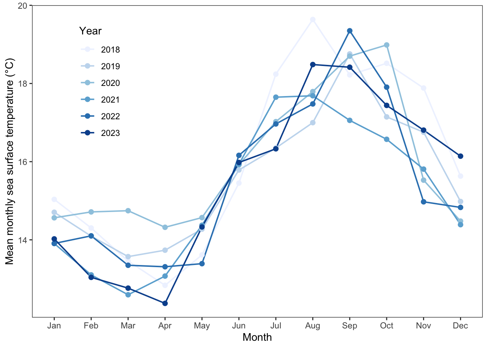

library(tidyverse) # Load packages (based on hw 3 packages)
library(here)
library(gt) # chose gt
library(janitor) # Optional packages
library(readxl)
library(readr)
library(DHARMa)
library(MuMIn)
sst <- read_csv(here("data", "SST_update2023.csv")) # read in data for prob 2
nest_boxes <- read_csv(here("data", "occdist.csv")) |>
clean_names() # read in data for prob 3 final
repo: https://github.com/wywydubs/ENVS-193DS_spring-2025_final
Problem 1
a. Transparent statistical methods
In part 1 they used some type of correlation test. In part two they used an ANOVA test.
b. More information needed
Effect size could be helpful in this context, as it would tell us more about the strength of the data, which would give more real world application (ex. a large effect size would explain a substantial nitrogen load difference. Actually presenting the means and their standard deviations in some way would also help, as this would give a digestible way to actually view the data, not just the conclusion from the data (ex. mean fertilizer samples had x amount of nitrogen present).
c. Suggestions for Rewriting
We found significant correlation between distance from headwater (km) and annual total nitrogen load (kg year^-1), telling us that there is a relationship between the two likely due to impacts from the runoff surrounding the headwaters. correlation test (pearson?) (r = correlation coefficient, p = 0.03, α = significance level)
The source of the runoff has a statistically significant effect on the average annual nitrogen load, telling us that nitrogen loads vary based on where runoff is coming from (urban land, atmospheric deposition, fertilizer, wastewater treatment, and grasslands). (ANOVA: F = F-statistic, p = 0.02, η² = effect size, α = significance level).
Problem 2
a. data cleaning and summarizing
sst_clean <- sst |> # rename
mutate(
year = year(date),
month = month(date)) |> # create new columns
filter(year >= 2018)|> # filter to match structure
group_by(year, month) |> # group by new columns
summarize(
mean_monthly_sst = mean(temp), # add in mean
.groups = 'drop') |> # make output ungrouped
# (ChatGPT troubleshooting suggestion)
mutate(
year = factor(year), # convert column to ordered month list (abbreviated)
month = factor(month, levels = 1:12, labels = month.abb, ordered = TRUE)
)
slice_sample(sst_clean, n = 5) # give the 5 samples# A tibble: 5 × 3
year month mean_monthly_sst
<fct> <ord> <dbl>
1 2020 Dec 14.5
2 2020 Apr 14.3
3 2022 Mar 13.3
4 2021 Jul 17.6
5 2018 Oct 18.5str(sst_clean) # shwo the structuretibble [72 × 3] (S3: tbl_df/tbl/data.frame)
$ year : Factor w/ 6 levels "2018","2019",..: 1 1 1 1 1 1 1 1 1 1 ...
$ month : Ord.factor w/ 12 levels "Jan"<"Feb"<"Mar"<..: 1 2 3 4 5 6 7 8 9 10 ...
$ mean_monthly_sst: num [1:72] 15 14.3 13.5 12.8 13.6 ...b. Data visualization
ggplot(
data = sst_clean, # specify in data
aes(x = month, y = mean_monthly_sst, group = year, color = year)) +
# define x, y, groups, color
geom_line(linewidth = 0.7) + # add in line and points
geom_point(size = 2) +
labs(
x = "Month",
y = "Mean monthly sea surface temperature (°C)",
color = "Year") + # add in names for x and y and color
scale_color_brewer(palette = "Blues") + # add in blues colors
theme_bw() + # assign correct theme
theme(
panel.grid.major = element_blank(), # get rid of grid lines
panel.grid.minor = element_blank(),
legend.position = c(0.15, 0.75) # rough legend position
)
# Problem 3
## a. Response Variable
In this data set, 1s indicate that a nest box was occupied by that specific bird species, and 0s indicate that the nest box was unoccupied. Biologically, this represents if a certain nest box provided viable nesting habitat for a specific species during the breeding season.
## b. Purpose of Study
The Swift Parrots are the main bird intended to be protected, while the Starlings and Martins are the competitors. Since the Swift Parrots are in a more vulnerable population outlook, they require more protection, while the other two species are not endangered currently.
## c. Difference in “seasons”
The two seasons are the breeding years 2016 and 2019. In this study, 2016 was for new nest boxes, and 2019 was for established boxes that had been there for 3 years which gave researchers the ability to compare initial inhabitant data to established box inhabitant data.
## d. Table
model_table <- tibble::tibble( # make data frame
`Model #` = 1:4, # assign numbers
`Season Variable Present?` = c("No", "Yes", "No", "Yes"), # add season column
`Distance to Forest Edge Present?` = c("No", "No", "Yes", "Yes"),
# add forest column
`Model Description` = c(
"Null model: assumes no effect from the variables.",
"Season-only model: tests if year/season affects occupancy.",
"Distance-only model: tests if distance to forest affects occupancy.",
"Saturated model: includes interaction between season and distance
variables."
) # add in descriptions
)
model_table |> #create a table
gt() |>
tab_header(
title = "Table of Models for Nest Box Occupancy" # add title in header
)| Table of Models for Nest Box Occupancy | |||
|---|---|---|---|
| Model # | Season Variable Present? | Distance to Forest Edge Present? | Model Description |
| 1 | No | No | Null model: assumes no effect from the variables. |
| 2 | Yes | No | Season-only model: tests if year/season affects occupancy. |
| 3 | No | Yes | Distance-only model: tests if distance to forest affects occupancy. |
| 4 | Yes | Yes | Saturated model: includes interaction between season and distance variables. |
e. Run Models
mod1 <- glm(e ~ 1, data = nest_boxes, family = binomial) # create null model
mod2 <- glm(e ~ season, data = nest_boxes, family = binomial)
# create season model
mod3 <- glm(e ~ edge_distance, data = nest_boxes, family = binomial)
# create edge distance model
mod4 <- glm(e ~ season * edge_distance, data = nest_boxes, family = binomial)
# create saturated modelf. Check the diagnostics
# simulate and plot for all models
res1 <- simulateResiduals(mod1)
plot(res1)res2 <- simulateResiduals(mod2)
plot(res2)res3 <- simulateResiduals(mod3)
plot(res3)res4 <- simulateResiduals(mod4)
plot(res4)g. Select the best model
options(na.action = "na.fail") # troubleshooting line from MuMin guide
# Use dredge to give every possible model from our model 4 with all variables
dredge_results <- dredge(mod4)
# Show the top models ranked by AICc (supposedly more accurate vs AIC)
print(dredge_results)Global model call: glm(formula = e ~ season * edge_distance, family = binomial,
data = nest_boxes)
---
Model selection table
(Int) edg_dst ssn edg_dst:ssn df logLik AICc delta weight
4 1874.000 0.005826 -0.9325 3 -33.462 73.0 0.00 0.703
8 419.000 2.027000 -0.2108 -0.001002 4 -33.307 74.8 1.76 0.291
2 -6.032 0.005221 2 -39.684 83.4 10.39 0.004
3 1792.000 -0.8898 2 -40.916 85.9 12.85 0.001
1 -2.886 1 -46.958 95.9 22.90 0.000
Models ranked by AICc(x) The best model as determined by Akaike’s Information Criterion corrected for small sample size (AICc) was the model that measured the occupancy based on the relationship between edge distance and season.
h. Visualize model predictions
prediction_range <- expand.grid(
edge_distance = seq(min(nest_boxes$edge_distance),
max(nest_boxes$edge_distance), length.out = 100),
season = unique(nest_boxes$season)
)
# add in 100 predictions,
get_preds <- function(model, model_label) {
preds <- predict(model, newdata = prediction_range,
type = "response", se.fit = TRUE)
prediction_range %>%
mutate(
fit = preds$fit,
lower = fit - 1.96 * preds$se.fit,
upper = fit + 1.96 * preds$se.fit,
model = model_label
)
}
# write out function to make predictions
pred1 <- get_preds(mod1, "Model 1: Null") #apply predictions for the models
pred2 <- get_preds(mod2, "Model 2: Season Only")
pred3 <- get_preds(mod3, "Model 3: Distance Only")
pred4 <- get_preds(mod4, "Model 4: Both")
all_predictions <- bind_rows(pred1, pred2, pred3, pred4)
# combine for one data frame
ggplot(all_predictions,
aes(x = edge_distance, y = fit, color = season, fill = season)) +
geom_line(size = 1) +
geom_ribbon(aes(ymin = lower, ymax = upper, fill = season, group = season),
alpha = 0.2, color = NA) +
facet_wrap(~model) +
# add in prediction graph
labs(
x = "Distance to Forest Edge (meters)",
y = "Predicted Probability of Nest Box Being Unoccupied"
)+
theme_minimal() +
theme(
panel.grid = element_blank(),
legend.title = element_blank()
) # add in all visual changes
i.
Fig. 1: Predicted probabilities of nest boxes being unoccupied are shown across a gradient of distance from the forest edge, with two survey years of 2016 and 2019.Each panel is one of four fitted models: a null model with no predictors, a season-only model, a distance-only model, and a full model including both season and distance to edge. Grey ribbons are 95% confidence intervals.
Data source: Stojanovic, Dejan et al. (2021). Do nest boxes breed the target species or its competitors? A case study of a critically endangered bird [Dataset]. Dryad. https://doi.org/10.5061/dryad.83bk3j9sb
** note ** this section I used mostly AI suggestions to write code as I was very lost and could not find anything online to start my predictions. GGplot sections were completed without.
calcs <- expand.grid(
edge_distance = c(0, 900),
season = c(2016, 2019) # set parameters for data frame
)
point_preds <- predict(mod4, newdata = calcs,
type = "response", se.fit = TRUE)
# using model 4, generate with confidence intervals
calcs <- calcs |>
mutate(
predicted_prob = point_preds$fit, #predict occupancy
lower_95 = predicted_prob - 1.96 * point_preds$se.fit,
upper_95 = predicted_prob + 1.96 * point_preds$se.fit #upper and lower
)
calcs #display edge_distance season predicted_prob lower_95 upper_95
1 0 2016 0.002358963 -0.005970198 0.010688124
2 900 2016 0.419379085 0.151035826 0.687722344
3 0 2019 0.001254658 -0.006370577 0.008879893
4 900 2019 0.024990278 -0.043235036 0.093215591k. Interpret your results
At 0 meters from the forest edge, the predicted probability of a nest box being unoccupied was extremely low in both 2016 and 2019, while at 900 meters, the probability increased sharply in 2016 but remained low in 2019. This aligns with the broader trend from the study, which was a a decline in overall occupancy from 29 boxes used in 2016/2017 to 20 in 2019/2020. The data tells us that the relationship between distance and occupancy probability is non-linear and season-dependent. This might indicate that Swift Parrots face pressure from Common Starlings and Tree Martins, who occupy more boxes near forest edges over time.
Problem 4
- Visualization Discussion
The visualizations from hw2 and 3 are very different in the sense that the graphical nature of the hw2 visualization lacks any sort of artistic or emotional expression. Hw3 lacks the ability to express the data as clearly. Both data visualizations focus on alarm clock usage. To be honest, my data really had no noteworthy trends numerically, so conveying the emotional trends via the affective visualization worked better for me. My feedback was to make my messaging more clear which I implemented with labeling.